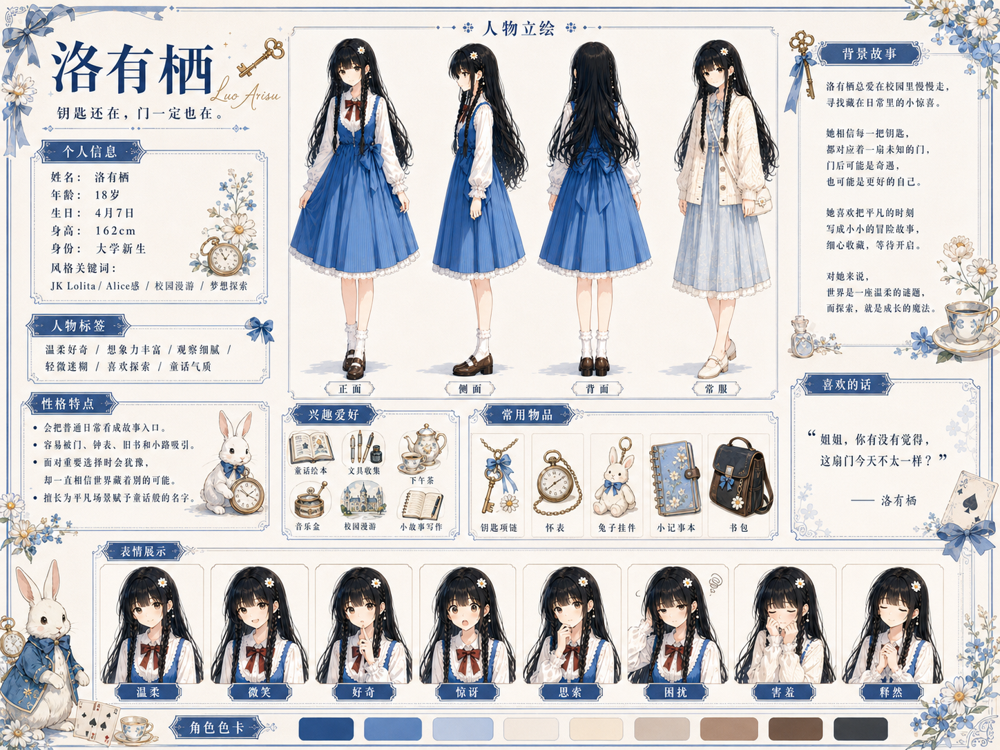

台前主题
姐妹筹备一场“兔子洞茶会”，通过服装、手账、摄影、旧图书室、邀请函和小物件展现少女日常。
Character Bible · HTML Sheet System | 0.5-doc-governance
先让网页成为稳定、美观的展示窗口，再把每一个服饰、配饰、表情和物件拆成可复用透明资产。


Stage 01
本阶段把整版设定图拆成结构化网页与资产流水线：文字、边框、色卡和标签交给 HTML/CSS；角色、服饰、配饰和道具使用参考截图重新生成透明 PNG。
姐妹筹备一场“兔子洞茶会”，通过服装、手账、摄影、旧图书室、邀请函和小物件展现少女日常。
青悠用秩序保护梦想，有栖用探索寻找梦想。两人的相处从互补走向冲突，再走向共同创造。
AIGC 在中后期逐渐浮现，放大“被替代”“完美梦境”“选择外包”等焦虑。最终工具回到工具位置，人物把方向、取舍和关系握回自己手中。
角色页
当前页面先用参考截图和占位槽稳定版式；透明 PNG 生成后会自动替换进入对应槽位。
工作流
资料地图
当前首页是轻量展示入口；第一版长内容没有删除，保存在完整归档和结构化数据里。下面按层级进入不同资料。
面向浏览和展示，优先呈现美观网页与角色设定页。
从旧归档拆出的二级页面，先保留完整骨架、摘要和原始锚点，后续逐页精修。
第一版长内容保留在归档页，适合查看完整人设、故事、提示词、制作规范与资产清单。
当前网页由数据和模板生成，文案与前端分离。
给多 agent 并行、资产生成、坑点召回和后续 skill 沉淀使用。
故事
姐妹共同筹备一场“兔子洞茶会”。
表层是少女日常与茶会企划，中层是生活的秩序与无序、计划与探索的冲突，深层是 AIGC 时代对价值、陪伴、顾问和生成内容的再思考。